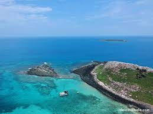

Abrolhos representa um marco para a conservação marinha no país. Em 06 de abril de 1983, por meio do Decreto Federal nº 88218 foi criado o Parque Nacional Marinho dos Abrolhos (PARNA MAR Abrolhos). Desde então, 87.943 hectares desta Unidade de Conservação (UC) ajudam a proteger a região com a maior biodiversidade marinha do Brasil e do Atlântico Sul. O Parque é administrado pelo Instituto Chico Mendes de Conservação da Biodiversidade - ICMBio, autarquia federal ligada ao Ministério do Meio Ambiente.

Abrolhos protege uma porção significativa do maior banco de corais e mais importante berçário das baleias jubartes do Atlântico Sul, além de espécies de tartarugas marinhas, aves marinhas e uma infinidade de peixes e invertebrados que compõem a maior biodiversidade marinha do Brasil e do Atlântico Sul.
O arquipélago de Abrolhos é endereço certo de milhares de baleias jubarte que deixam as águas frias da Antártica para amamentar filhotes e se reproduzir, entre julho a novembro. Se você que é humano (e brasileiro) não perderia a chance de passar férias em um lugar com essas condições, imagina aquelas gigantes que vêm de longe para criar filhotes.